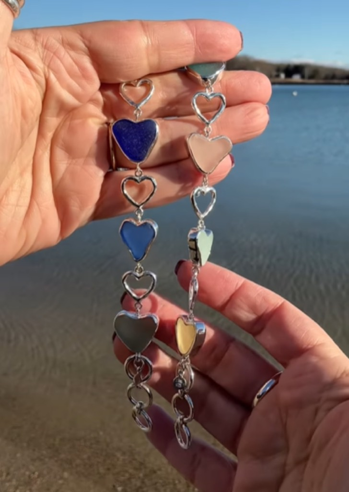
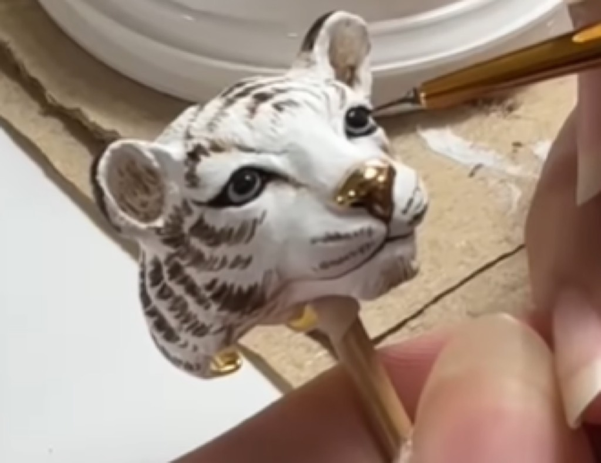

Contemporary Practice 559: Art, Craft, and Innovation: Mastery, Innovation, and Contemporary Artistic Practice
In contemporary visual culture, artists working across diverse media—from traditional papercutting and textile arts to digital illustration and ceramic design—demonstrate that meaningful creative practice transcends medium specificity. What unites exceptional practitioners is commitment to technical mastery, conceptual depth, and authentic engagement with their chosen discipline. This artist practices at intersection of technical mastery and conceptual exploration, demonstrating how sustained engagement with artistic medium can generate work of genuine significance and cultural resonance. This comprehensive exploration examines the professional context, technical sophistication, cultural significance, and sustained practice that characterize serious artistic work in twenty-first century creative landscape.
The path to professional artistic practice rarely follows linear trajectory. Most contemporary artists emerge from combinations of formal training, self-directed experimentation, community engagement, and gradual skill development through sustained practice. Whether trained through traditional fine art education, apprenticeship systems, professional design programs, or autodidactic learning, successful practitioners share common characteristics: curiosity, persistence, willingness to embrace failure as learning opportunity, and commitment to continuous artistic development.
Formal art education provides valuable foundation including exposure to diverse artistic practices, access to professional equipment and studio space, mentorship from established practitioners, and community of peers engaged in similar creative investigations. However, formal credentials alone don't guarantee artistic success; equally important are individual motivation, sustained practice, and ability to translate academic training into personal artistic vision. Many contemporary artists supplement formal education with self-directed learning, online communities, workshop participation, and mentorship relationships that extend professional development beyond institutional contexts.
The digital revolution has fundamentally transformed how artists develop practice and build professional careers. Social media platforms enable direct audience engagement without requiring gallery representation or institutional validation. Artists can now document process, share completed work, build following, receive feedback, and generate income through multiple channels—digital downloads, print sales, commissions, teaching, and brand collaborations. This democratization has opened artistic practice to individuals who might previously have been excluded by geographic limitations, economic barriers, or lack of institutional access.
Professional development for contemporary artists increasingly involves business literacy. Successful practitioners understand pricing, marketing, contract negotiation, tax implications, and professional communication. Artist residencies, grants, teaching positions, and institutional support remain valuable, but many contemporary artists support their practice through diversified income streams combining different revenue sources—commissions, sales, teaching, workshops, brand partnerships, and occasional commercial work.
Excellence in diverse artistic practices and experimental approaches demands sophisticated technical understanding developed through extended practice, study, and experimentation. Technical proficiency provides essential foundation for artistic expression—without command of medium, creative vision remains frustrated or unrealized. Paradoxically, technical mastery also enables greater experimental freedom; artists who fully understand their tools' capabilities and limitations can push boundaries more effectively than those still struggling with basic competency.
The artistic process typically begins with research and inspiration gathering, moves through ideation and concept development, progresses to sketching or preliminary work, and culminates in execution and refinement. This general pattern accommodates infinite variation depending on individual artist's working methods, the specific medium, and the particular project at hand. Some artists work methodically from detailed preliminary plans; others embrace spontaneity and allow work to develop organically. Both approaches have validity and can generate compelling results.

Contemporary artists increasingly document their process through photography, video, and social media content. This documentation serves multiple functions: it demystifies artistic practice, builds audience appreciation for technical complexity, provides teaching and inspiration for other artists, and creates additional content extending artist's presence beyond finished work. Process documentation humanizes artistic practice, revealing the labor, problem-solving, and iteration involved in creating work that appears effortless or spontaneous in final form.
Material knowledge constitutes crucial dimension of technical mastery. Understanding specific properties of chosen materials—how they respond to different techniques, their limitations and possibilities, how they interact with other materials, how they age and transform over time—deeply informs artistic decision-making. Artists who work with traditional materials benefit from centuries of accumulated knowledge about material behavior, while those employing innovative or hybrid materials engage in research and experimentation contributing to evolving understanding of contemporary material possibilities.
Physical environment—studio space, access to equipment, organizational systems—significantly impacts artistic productivity and creative development. Studio design reflects individual working methods and material needs. Some artists require minimal space and equipment; others need substantial facilities for large-scale work or complex processes. Shared studio spaces, artist communities, and residency programs provide valuable access to equipment and community for artists without personal resources for full private studio.
Meaningful artistic practice engages with contemporary cultural concerns while maintaining connections to artistic traditions and heritage. Artists working with creative investigation, material engagement, and artistic development participate in important cultural conversations about values, aesthetics, social concerns, and human experience. Art functions as cultural commentary, documentation, celebration, and critique—providing space for exploring ideas, feelings, and experiences that don't fit neatly into other cultural forms.
The distinction between decorative craft and fine art, historically significant in artistic hierarchies, increasingly blurs in contemporary practice. Artists now comfortably work across categories—combining functional concerns with fine art ambitions, exploring craft traditions through conceptual art frameworks, and creating work that resists neat categorization. This boundary-crossing reflects broader cultural shift toward more fluid artistic categorization and recognition that meaningful creative work can occur across traditional disciplinary divisions.
Contemporary art increasingly emphasizes individual artistic voice and personal perspective. Audiences value work reflecting distinctive vision, personal investigation, or unique voice—qualities that distinguish artistically significant work from merely technically competent or aesthetically pleasing productions. Developing such personal voice requires extended engagement with medium, mature artistic judgment about which ideas merit exploration and which constraints serve creative practice, and willingness to risk failure in pursuit of genuine artistic innovation.
Sustainability and environmental consciousness increasingly inform artistic practice. Artists may choose materials based on environmental impact, incorporate ecological themes into conceptual frameworks, or directly address climate and conservation concerns. These decisions reflect broader cultural anxiety about environmental destruction and desire to align artistic practice with ethical values and ecological responsibility.
Social and political concerns also emerge in contemporary artistic practice. Artists address issues of identity, representation, social justice, political systems, and human rights through their work. Art provides powerful vehicle for processing difficult subjects, expressing dissent, celebrating cultural traditions, and articulating experiences often marginalized in mainstream discourse. This socially-engaged dimension of contemporary practice demonstrates art's continuing relevance to urgent contemporary concerns.

Artistic inspiration emerges from countless sources—personal experience, observation of natural and human environments, engagement with other artistic work, intellectual investigations, emotional processing, and deliberate creative exercises. Sustained artistic practice requires reliable access to inspiration and motivation to continue working even when creative energy ebbs. Many artists develop personal practices, rituals, or disciplines that maintain creative momentum—consistent studio time, sketchbook practice, research activities, or community engagement that sustains artistic commitment.
Artistic evolution constitutes natural dimension of sustained practice. As artists mature, their work typically becomes more sophisticated, demonstrating deepening understanding of medium, more refined artistic judgment, and expanding conceptual ambition. Early work often shows derivativeness or technical hesitation; mature practice typically evidences distinctive voice and confident execution. This evolutionary trajectory results from accumulated experience, feedback, exposure to other artistic work, and continued artistic investigation.
Engagement with broader artistic communities—whether through exhibitions, artist collectives, online platforms, or informal peer groups—significantly impacts artistic development. Feedback from other artists, exposure to different approaches and perspectives, and friendly competition or collaboration stimulate creative growth. Many artists value peer relationships as essential to sustaining artistic practice over decades.
Teaching represents valuable professional activity for many artists, providing income while allowing knowledge sharing and community engagement. Teaching others forces clarification of intuitive knowledge, challenges assumptions about artistic practice, and creates community around shared creative interests. Many established artists integrate teaching into their practice, finding it mutually beneficial—students learn from experienced practitioners while artists gain fresh perspectives from emerging practitioners.
Achieving visibility and building appreciative audiences remains significant challenge for contemporary artists despite democratizing effects of social media. Successful practices typically involve consistent output and documentation, strategic social media engagement, exhibition participation, relationship-building with galleries and institutions, and community involvement. Many artists employ multiple visibility strategies rather than relying on single approach—combining institutional exhibitions with self-directed social media presence, gallery representation with direct sales, and professional practice with teaching or community involvement.
Awards, residencies, grants, and institutional recognition validate artistic work within professional contexts while providing financial support enabling continued artistic development. These opportunities remain competitive, but emerging artists increasingly access them through diverse pathways—not only traditional gatekeepers but also alternative galleries, online platforms, artist-run spaces, and community-based initiatives.
Direct artist-audience relationships, facilitated by social media and online commerce, provide unprecedented opportunities for independent artists to build sustainable practices. Email newsletters, subscriber platforms like Patreon, direct commissions, and online sales allow artists to cultivate loyal audiences supporting their practice without requiring institutional intermediaries.
Contemporary audiences have unprecedented access to artistic work through multiple channels. Social media platforms like Instagram provide direct access to artists' portfolios and process documentation. Professional websites and online portfolios showcase selected work and provide contact information for inquiries or purchases. Traditional gallery systems, art fairs, and museum exhibitions continue functioning alongside these digital alternatives. Art publications, interviews, podcasts, and online platforms dedicated to art discussion and criticism provide context and critical perspective.
Supporting artists' practice can take multiple forms: purchasing work, commissioning custom pieces, sharing their content on social media, attending exhibitions and events, writing reviews or recommendations, gifting subscriptions to those using platforms like Patreon, or engaging in informal patronage. For serious enthusiasts, following artists on social media, subscribing to newsletters, and joining artist communities ensures awareness of new work and exhibition opportunities. Many artists welcome inquiries about commissions, studio visits, collaborations, or teaching opportunities—direct communication through websites or social media provides starting point for such conversations.